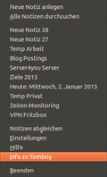

Tomboy
Dieser Artikel wurde für die folgenden Ubuntu-Versionen getestet:
Ubuntu 16.04 Xenial Xerus
Ubuntu 14.04 Trusty Tahr
Zum Verständnis dieses Artikels sind folgende Seiten hilfreich:
Tomboy  ist eine Anwendung, die es gestattet, Ideen, Notizen, Aufgaben oder andere Informationen schnell und einfach zu organisieren. Trotz der äußerlichen Ähnlichkeit ist es mehr als ein einfacher Klebezettel. Es besitzt die Fähigkeit, Notizen und Ideen wie bei einem Wiki miteinander zu verknüpfen, und reiht sich damit in die Kategorie Desktop-Wiki ein.
ist eine Anwendung, die es gestattet, Ideen, Notizen, Aufgaben oder andere Informationen schnell und einfach zu organisieren. Trotz der äußerlichen Ähnlichkeit ist es mehr als ein einfacher Klebezettel. Es besitzt die Fähigkeit, Notizen und Ideen wie bei einem Wiki miteinander zu verknüpfen, und reiht sich damit in die Kategorie Desktop-Wiki ein.
Funktionen:
Hervorheben des Textes
Rechtschreibprüfung
Verbinden mit Internet- und E-Mail-Adressen
Verknüpfung der Notizzettel
Aktionen rückgängig machen/wiederholen
Anpassen der Schriftart und Schriftgröße

Listendarstellung
Export der Notiz in HTML
Druckfunktion
Darstellen von Dateipfaden als Links, die mit Nautilus geöffnet werden
Import von Notizen im Klebezettel-Applet
Durch Plugins erweiterbar
Notizen sind über Cloud-Dienste synchronisierbar und damit auf mehren Geräten verfügbar
auch unter Windows, Mac und Android
nutzbar
Tomboy ist mit Hilfe von Mono programmiert. Mit Gnote gibt es eine Portierung auf C++, die kein Mono benötigt, aber ein kompatibles Notizformat verwendet.
Installation¶
Zur Installation [1] ist folgendes Paket notwendig:
tomboy (universe)
 mit apturl
mit apturl
Paketliste zum Kopieren:
sudo apt-get install tomboy
sudo aptitude install tomboy
Verwendung¶
Der Programmstart [3] erfolgt bei Ubuntu-Varianten mit einem Anwendungsmenü über "Zubehör -> Tomboy". Um eine Notiz zu erstellen, muss man nur auf das Symbol im Panel klicken und "Neue Notiz anlegen" auswählen. Nachdem ein passender Titel angegeben wurde, kann der gewünschte Inhalt eingefügt werden.
Da die Bedienung des Programms intuitiv ist, seien hier die wichtigsten Bedienelemente nur kurz vorgestellt:
| Bedienung | |
| Alle Notizen werden nach dem Stichwort durchsucht. | |
| Einen Textteil oder ein Stichwort mit der Maus markieren und das Icon anwählen. Es wird eine Notiz erstellt und verlinkt. | |
| Textteile Fett, Kursiv, | |
| Druckfunktion, Export nach HTML, installierte Erweiterungen und Information zu Seiten, die auf die aktuelle verweisen. | |
| Löscht die aktuelle Notiz | |
 Um wichtige Notizen immer im Menü zu finden, unabhängig davon, wann sie zuletzt benutzt wurde, muss man lediglich die Heftzwecke anwählen. fixiert die Notiz. Lose Notizen sind mit gekennzeichnet.
Gelöschte Notizen wiederherstellen¶
Gelöschte Notizen sind bei Bedarf wiederherstellbar. Dazu muss die gelöschte Notiz aus dem Ordner ~/.local/share/tomboy/Backup/ in den übergeordneten Ordner ~/.local/share/tomboy/ verschoben werden. Nachdem Tomboy neu gestartet wurde, ist die gelöschte Notiz wieder verfügbar.
Umstrukturierung¶
Sollte eine Umstrukturierung der Notizzettel gewünscht sein, gehen die Verknüpfungen zwischen den Notizen durch Umbenennen nicht verloren.
Erweiterungen¶
Um eine Erweiterung zu aktivieren oder auszuschalten, auf dem Tomboy-Symbol im GNOME-Panel einen Rechtsklick  ausführen und die Erweiterung unter "Einstellungen -> Add-Ins" durch Setzen des Häkchens (de)aktivieren. Durch Anwählen von "Add-In/Plugin Ordner öffnen" werden alle verfügbaren zusätzlichen Erweiterungen angezeigt.
ausführen und die Erweiterung unter "Einstellungen -> Add-Ins" durch Setzen des Häkchens (de)aktivieren. Durch Anwählen von "Add-In/Plugin Ordner öffnen" werden alle verfügbaren zusätzlichen Erweiterungen angezeigt.
Zusätzliche Erweiterungen für Tomboy können hier ausgewählt werden. Die gewünschte Erweiterung herunterladen, entpacken [2] und die README der jeweiligen Erweiterung beachten, um diese zu installieren [3].
Den Ordner zu den einzelnen "Add-Ins" bzw. "Plugins" findet man unter ~/.config/tomboy/.
Konfiguration¶
Rechtschreibprüfung¶
Um im Programm die Rechtschreibprüfung zu (de)aktivieren, muss man im Panel einen "Rechtsklick" ausführen und unter "Einstellungen -> Bearbeiten" die Option "Rechtschreibprüfung während der Eingabe" an bzw. abwählen.
Hier starten öffnen (Standard: Alt + F11 )
Neue Notiz anlegen
Alle Notizen durchsuchen
Links¶
Tomboy
- ProjektseiteTomboy/PluginList
- Erweiterungen
Tomboy per Webdav synchronisieren
 - Blogbeitrag, 10/2007
- Blogbeitrag, 10/2007Notizen
 Programmübersicht
Programmübersicht
- Erstellt mit Inyoka
-
 2004 – 2017 ubuntuusers.de • Einige Rechte vorbehalten
2004 – 2017 ubuntuusers.de • Einige Rechte vorbehalten
Lizenz • Kontakt • Datenschutz • Impressum • Serverstatus -
Serverhousing gespendet von